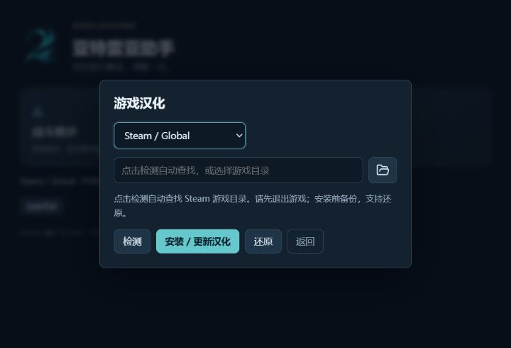

LOCALIZATION GUIDE
AION2 汉化安装与还原指南
在 Steam / Global 或 PURPLE 客户端中使用简体中文。亚特雷亚助手提供目录检测、汉化安装、更新与还原入口，汉化功能不需要 Npcap 驱动。
更新于
安装前：确认客户端并退出游戏
从官网下载安装包，安装后通过桌面快捷方式打开助手。请选择 Windows x64 MSI 整合安装包，无需下载 GitHub 的 Source code 或构建材料。
- 先完成 AION2（永恒之塔2）客户端更新，再完全退出游戏，避免语言文件被占用。
- 如果正在使用战斗统计，先在统计设置中选择“停止统计并返回首页”。
- 核对自己使用的是 Steam / Global 还是 PURPLE；两端的目录和语言资源不能混用。
游戏更新可能改变语言资源。当前适配范围见首页兼容性说明，每次安装前都应重新检测。未通过兼容性检查时，请停止操作，不要手动覆盖资源。
Steam / PURPLE 汉化安装步骤
- 在助手首页打开“游戏汉化”，选择对应的客户端。
- 点击“检测”自动查找游戏目录。没有找到或存在多个目录时，用文件夹按钮选择包含
Aion2/Content的游戏根目录，不要选择启动器目录或直接选择Content子目录。 - 确认检测结果与目标路径。更换客户端或编辑目录后，需要重新检测。
- 点击“安装 / 更新汉化”，在确认窗口核对客户端、目录与操作，再确认继续。取消确认不会安装汉化。
- 等待完成后进入游戏，将游戏文字语言设为 English，让汉化语言表生效。

安装过程保留原始资源备份，并检查兼容性；请不要在操作进行时移动游戏目录、删除备份或强制关闭助手。
游戏或助手更新后，需要重新汉化吗？
游戏更新可能替换语言资源；助手更新则可能带来新的适配与译文。先更新游戏和助手，退出游戏后，再进入“游戏汉化”重新检测并执行“安装 / 更新汉化”。
安装新版助手 MSI 只升级软件本身，不会自动修改游戏文件。请以当前客户端的检测结果为准，不要把另一端或旧版本的语言文件复制到新版本目录。
如何还原，以及汉化不显示时怎么办？
还原原始语言资源
完全退出游戏，在“游戏汉化”中选择原来的客户端与目录，重新检测后点击“还原”，核对确认窗口再继续。还原会检查备份与当前资源是否匹配；如果提示不匹配，请保留文件并反馈问题，不要强行写回旧备份。
安装后仍然显示英文或繁体中文
- 确认设置的是文字语言 English，而不仅是语音语言，并重新进入游戏检查。
- 确认安装汉化的目录就是启动器实际启动的那一份游戏。
- 如果刚更新过游戏，退出后重新检测并安装汉化。
- 如果只有部分文字未汉化，记录具体界面并反馈漏译；游戏内所有界面尚未逐一验收。
仍无法解决时，请到 GitHub Issues 反馈汉化问题，附上助手版本、Steam 或 PURPLE 客户端、检测提示和问题截图。截图请遮挡账号等个人信息。